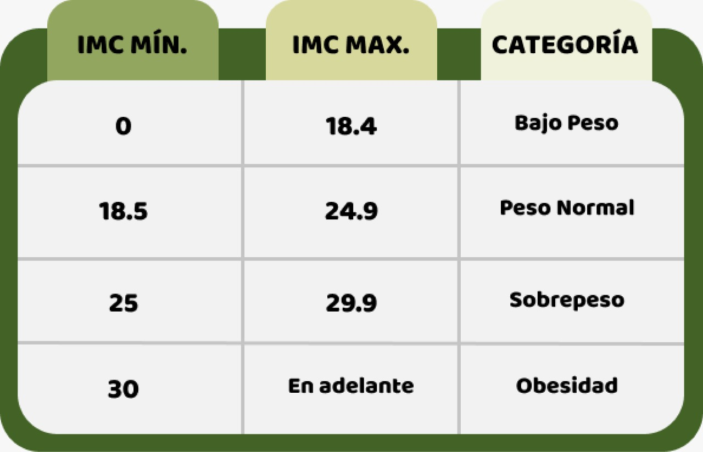

El índice de Masa Corporal es un número
calculado a partir del peso en kilogramos y
la altura en metros, el cual indica de forma
confiable el estado corporal y de salud en
cada persona, a partir de distintas
categorías que analizan los datos
anteriormente mencionados.
